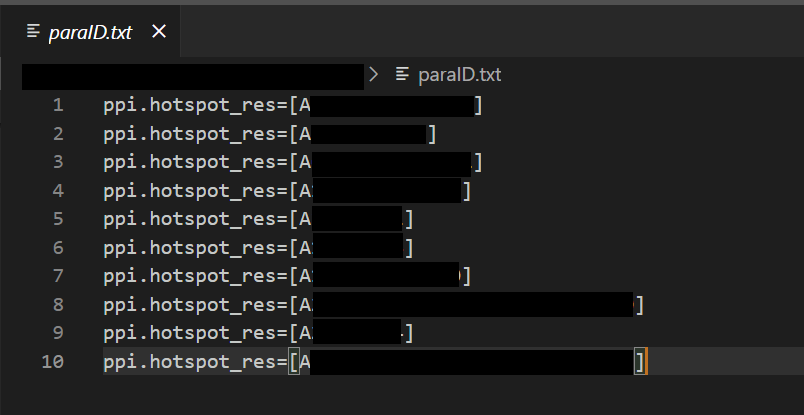
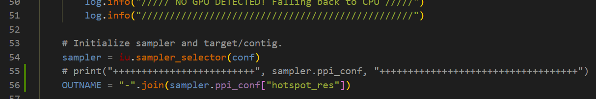
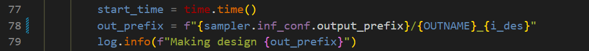
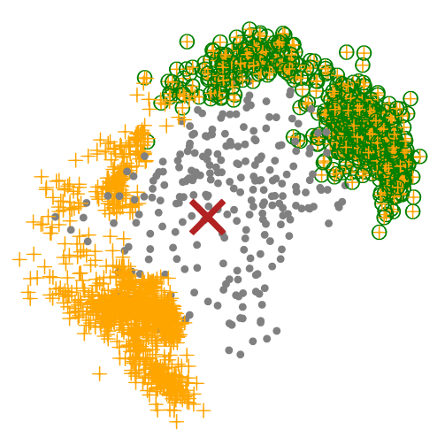

design binders via RFdiffusion and ProteinMPNN-FastRelax
In my use case, firstly, I tried to de novo design binders. However, I found that designed binders are limited to proteins with only one helix. Then, I changed to design binders based on scaffolds. The design process and scripts I used a lot are as follows.
RFdiffuion for desigining protein backbones, under SE3nv environment.
ProteinMPNN-FastRelax for desiging protein sequences, under dl_binder_design environment.
AlphaFold2 for evaluating designed proteins, under af2_binder_design environment.
We will design binders under these three environments: SE3nv environment, dl_binder_design environment, af2_binder_design environment.
Install these three environments
Make sure you have high performance computating envrionment with CUDA, and you can access GPU and internet. Their installations can automatically install dependencied packages that fit the GPU environment which you have to use for the heavy computation.
I use array-job to parallelly execute different ppi.hotspot_res arguments simultaneously. For example, I have 10 ppi.hotspot_res arguments to test, so my paraID.txt is like:

my paraID.txt file
and I setup 10 jobs (#SBATCH -a 1-10) for each `ppi.hotspot_res`. Each `ppi.hotspot_res` will design inference.num_designs=10000 binder backbones.
Untar 1000 scaffold templates
Don't forget to untar the provided 1000 scaffold templates (RFdiffusion/examples/ppi_scaffolds_subset.tar.gz). In ppi_scaffolds_subset.tar.gz, there is ppi_scaffolds folder and we will use it in our backbone designing script.
Add ppi_scaffolds argument in backbone name
In RFdiffusion/scripts/run_inference.py, I modify some codes a little bit, so that, the backbone pdb file name will contain the `ppi_scaffolds` argument.


Therefore, one of inference.num_designs=10000 binder backbones for ppi.hotspot_res=[A28-A25-A29-A26-A63] argument is A28-A25-A29-A26-A63_0.pdb.
3️⃣ sequence design and binder assessment script mpnn_af.slm#
Perform a filtering step
At this moment, we could perform a filtering step after we get all potential binder backbones. For example, I only want backbones (orange cross) in one side (green circle). We could remove other useless backbones, which can help a lot in reducing the computation stress.

Let’s say that we finally select 1000 favourite backbones, and we go to design binders based on these 1000 backbones. Normally, I will split favourite backbones into multiple folders, so I could parallelly design binders in each folder simultaneously. For example, in order to speed up the binder design process, I split the 1000 favourite backbones into 5 folders. After that, I could parallely execute #SBATCH -a 1-5 jobs simultaneously.
# sele_list contains names of 1000 selected backbones, # such as A28-A25-A29-A26-A63_0.pdbfolder_size =100# how many pdb files you want at most to be grouped in one folderchunks = [sele_list[x:x+folder_size] for x in range(0, len(sele_list), folder_size)]
# len(chunks)=5for i in range(len(chunks)):
chunk = chunks[i]
newpath ="../mydesigns/select_1000_mpnn_af/folder"+ str(i)
ifnot os.path.exists(newpath):
os.makedirs(newpath)
for j in chunk:
src ="../mydesigns/backbones_OUT/"+ j
dst ="../mydesigns/select_1000_mpnn_af/folder"+ str(i) +"/"+ j
shutil.copyfile(src, dst)
In each mydesigns/select_1000_mpnn_af/folder, af2.silent has our designed binders. And, we will extract their .pdb files from the .silent file by (for example)